Bienvenido al primer bar clandestino digital. ¡Geoffrey será tu barman de todos los tiempos en tu bolsillo!. El videojuego está inspirado en casinos y bares burgueses de los siglos XX, por lo que la estética tiene que ser elegante y opulenta. Aquí podemos ver una muestra de la interfaz de este juego
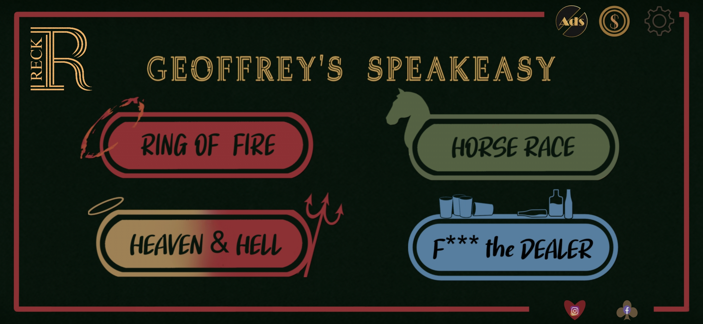
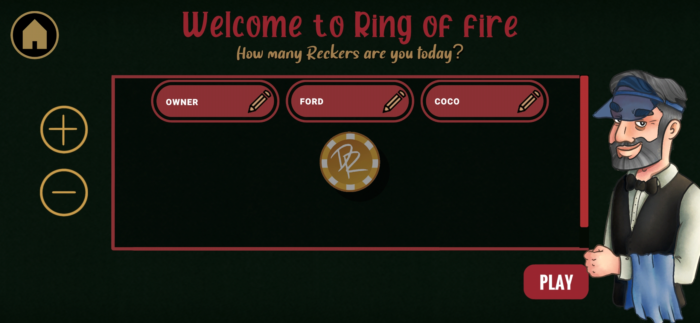
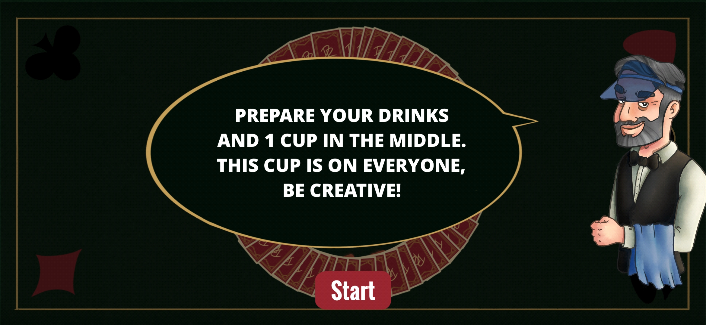
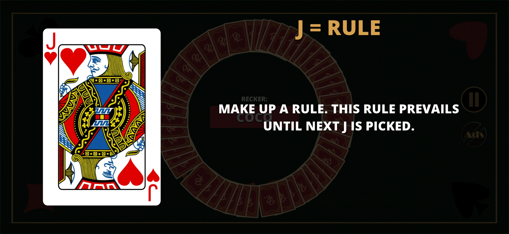
Cojuelo es un pequeño videojuego de plataformas para móviles. Este proyecto cuenta con dos modos de juego igual de importantes: el “Mapa” y el “Arcade”. Estos modos tienen sus propias pantallas, En modo “Arcade” solo podemos pulsar el botón “jugar”, pues esas partidas son partidas rápidas y nuestra interacción con esta pantalla tienen que ser igual, rápida. En modo “Mapa” podemos seleccionar los niveles y cambiar los mundos, los niveles se cambian el la misma pantalla pero los mundo tienen su propia pantalla. Esta es solo una pequeña muestra de todas las pantallas del juego
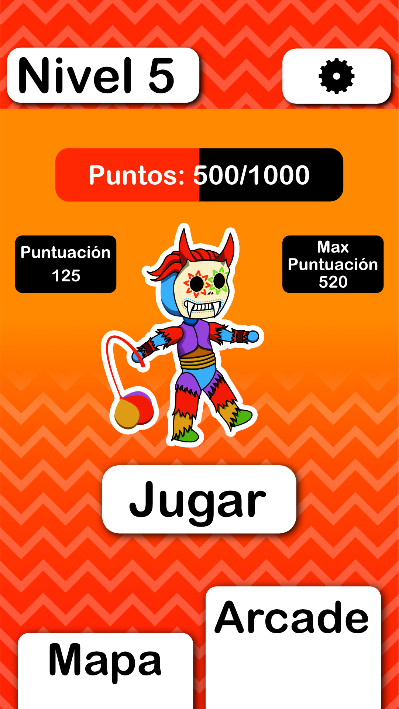

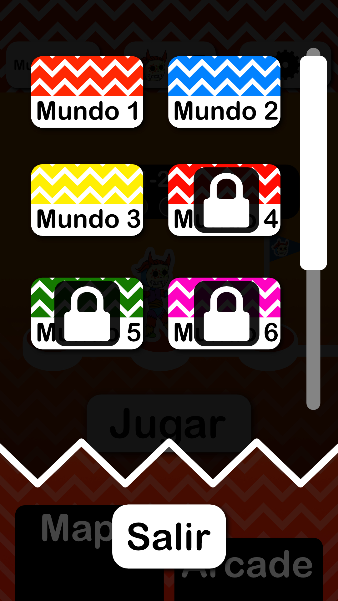
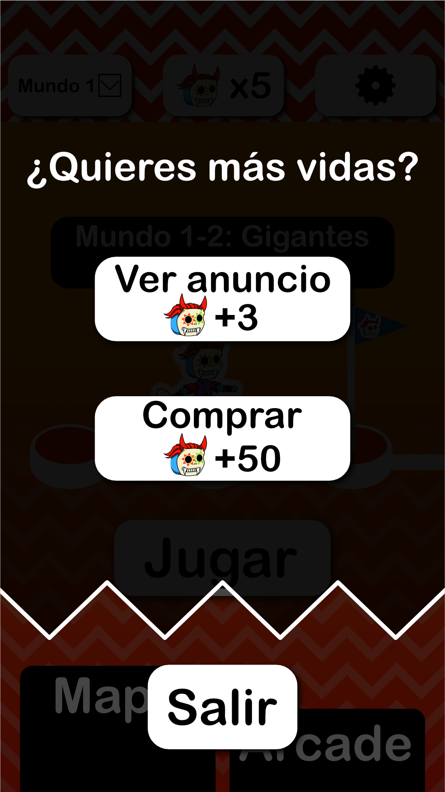
Trap Night es un videojuego rítmico sobre el mundo trap. Cada vez que entramos en la pantalla principal aparece un personaje de los muchos que tiene el juego, modificando la UI con su color característico. También, para la pantalla principal, opté por prescindir lo más posible del texto, sustituyéndolo por símbolos. Esta es solo una pequeña muestra de todas las pantallas del juego
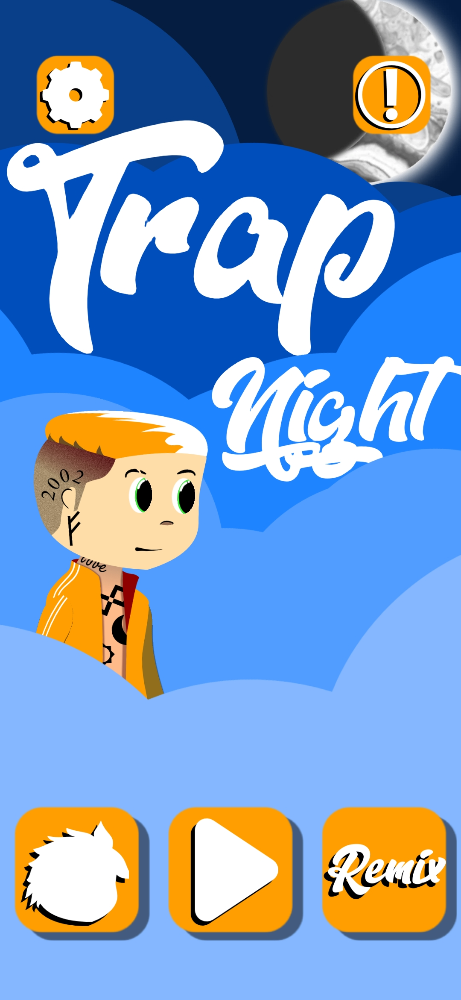
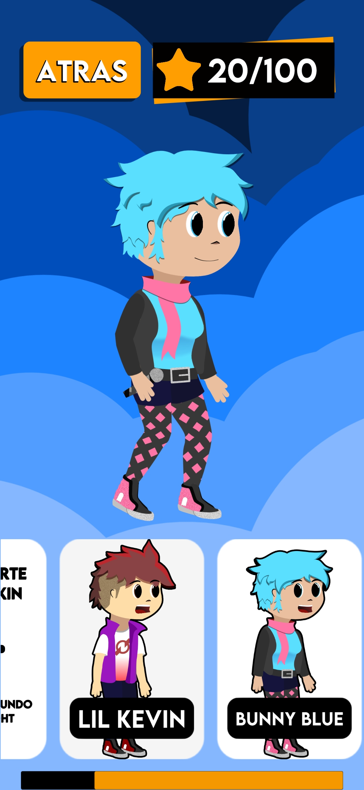
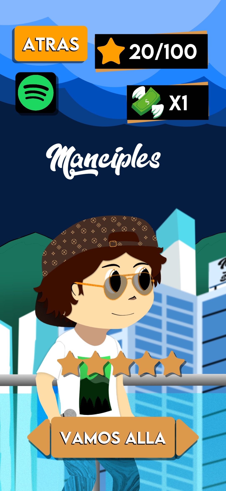
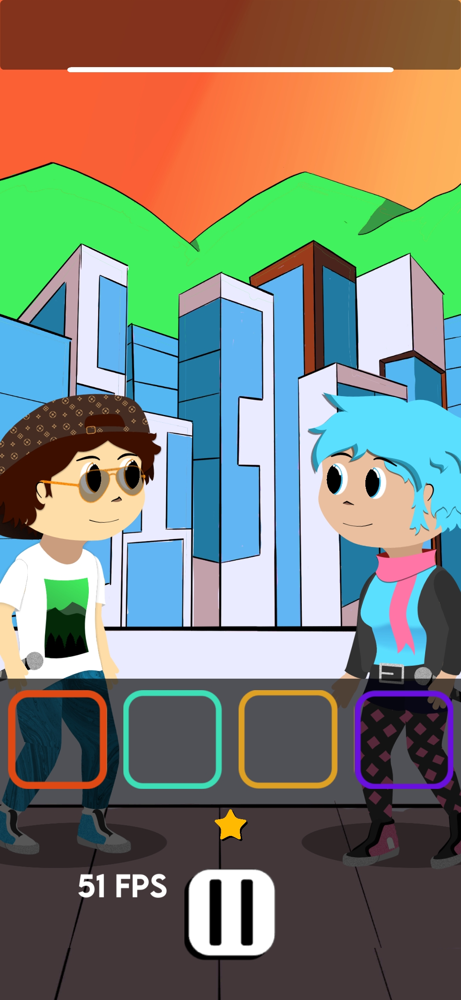